VR에 필요한 모든 것, 그림자 하나에.
VR 세션 내내 함께하는 무료 Windows 앱 하나. HaritoraX와 SlimeVR 호환 트래커의 풀트래킹, 음악과 심박수를 띄우는 VRChat 챗박스, 크래셔 방지, 손목 위 패널까지 모두 담았어요.
그림자처럼 따라 움직이는 풀트래킹.
Ombra는 VR Manager나 SlimeVR Server 없이 혼자서 HaritoraX와 SlimeVR 호환 트래커를 SteamVR에서 돌려요. 센서와 헤드셋으로 몸을 만들고, 모든 트래커를 흔들림 없이 빠르게, 드리프트 없이 유지해요.
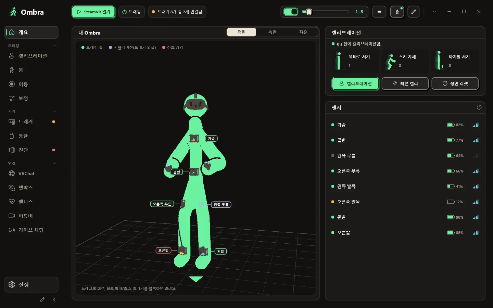
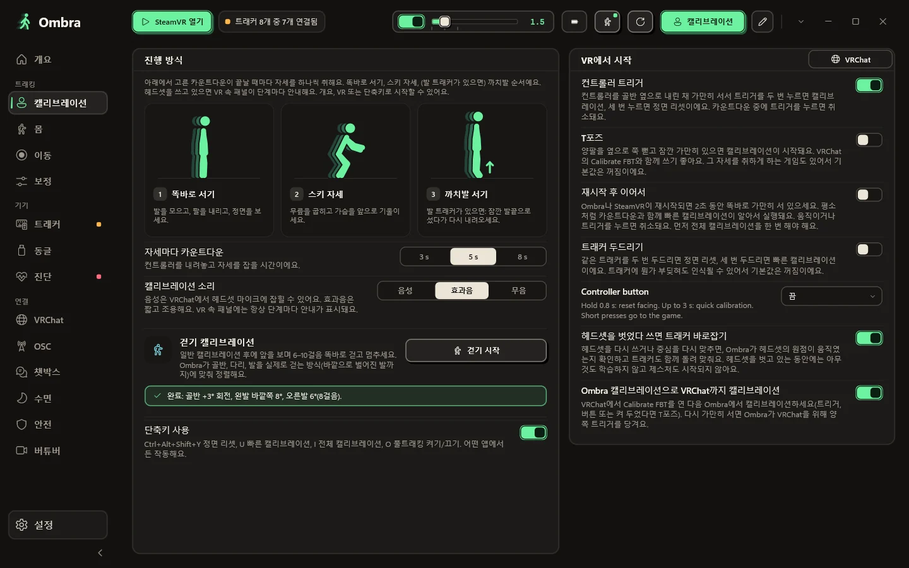
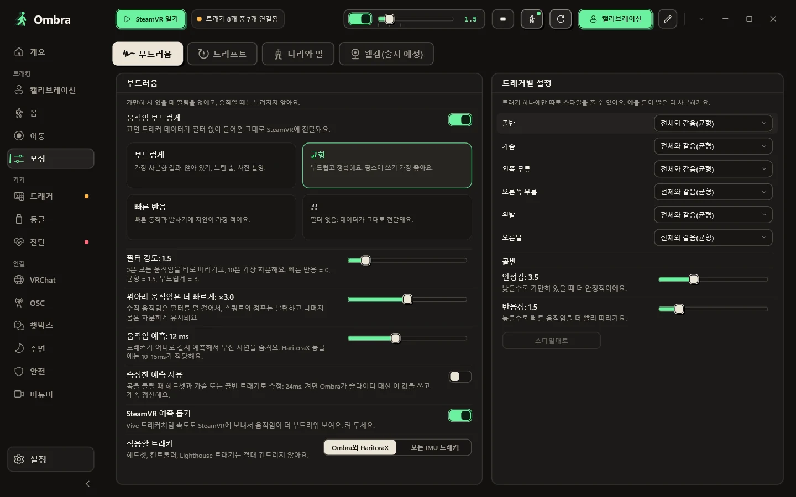
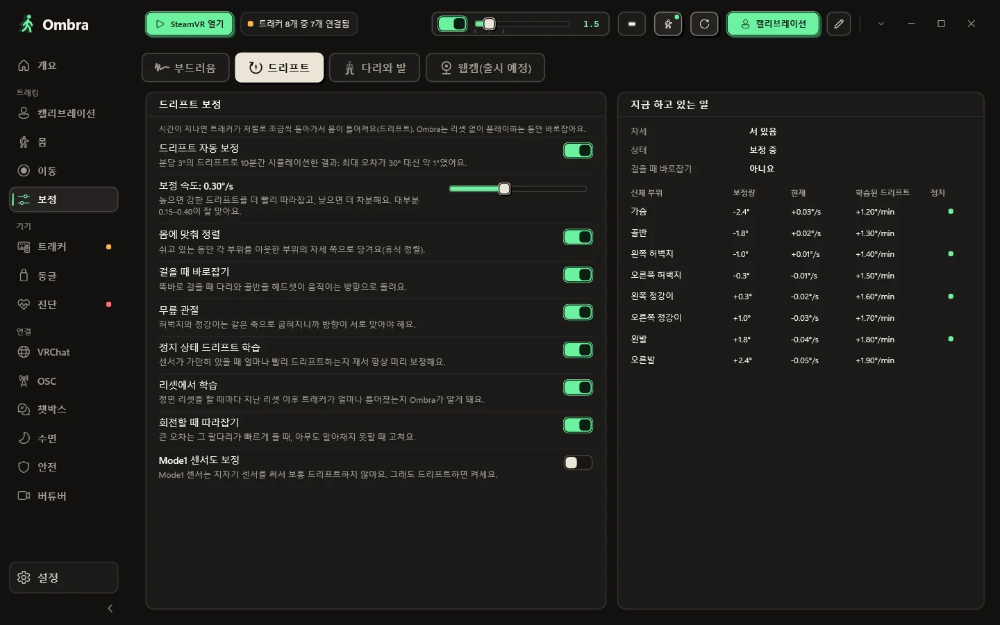
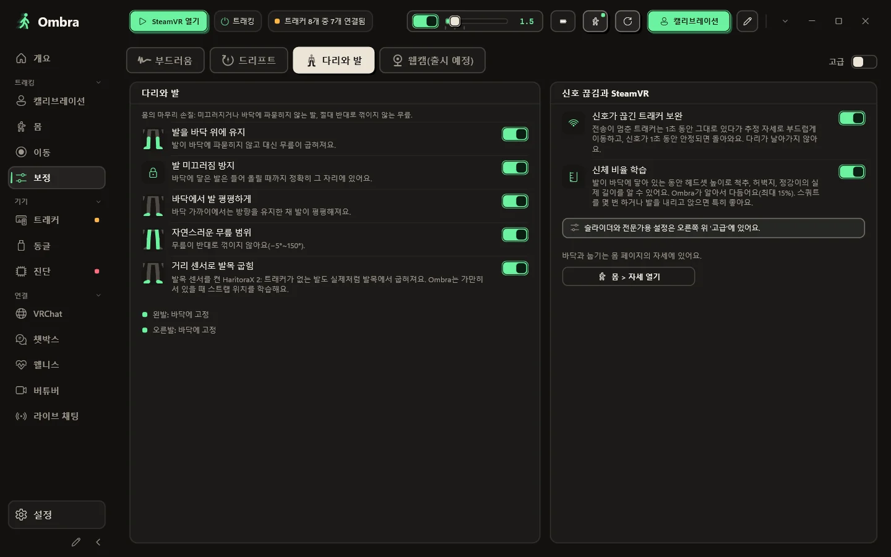
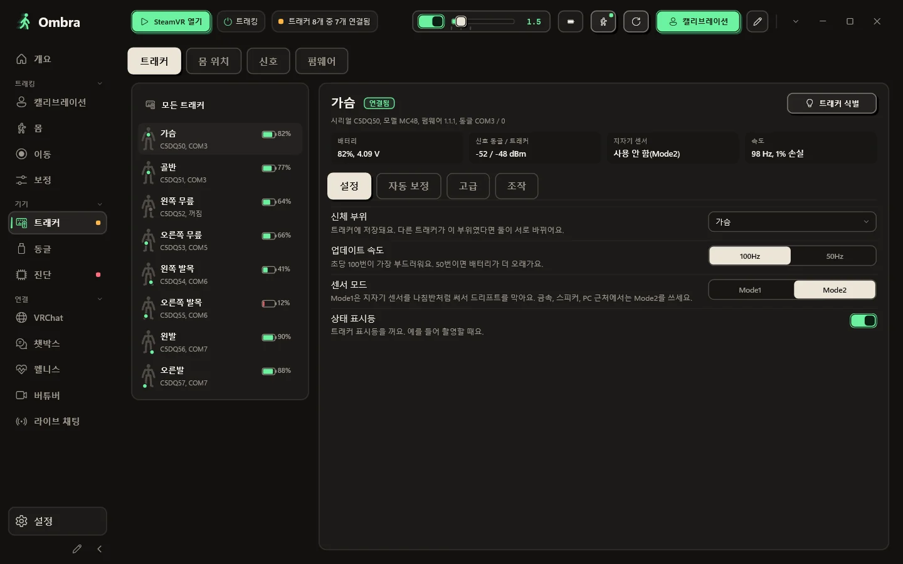
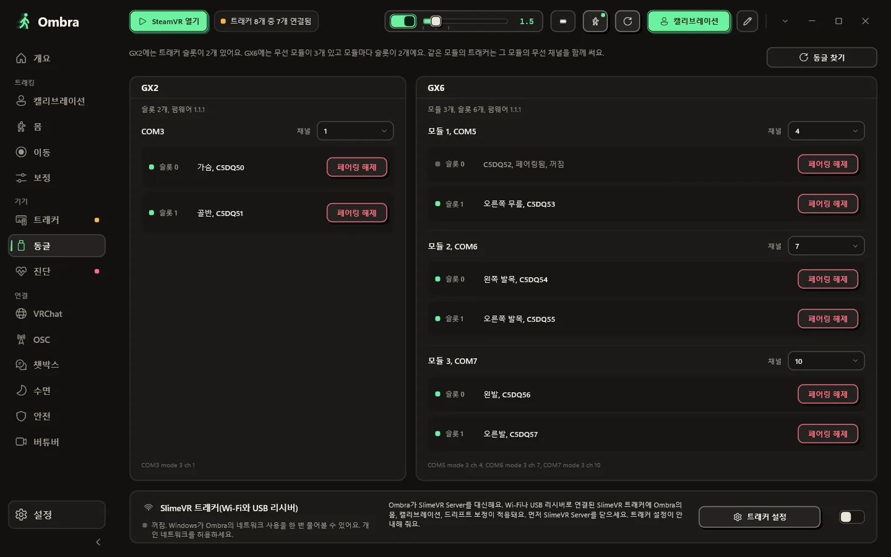
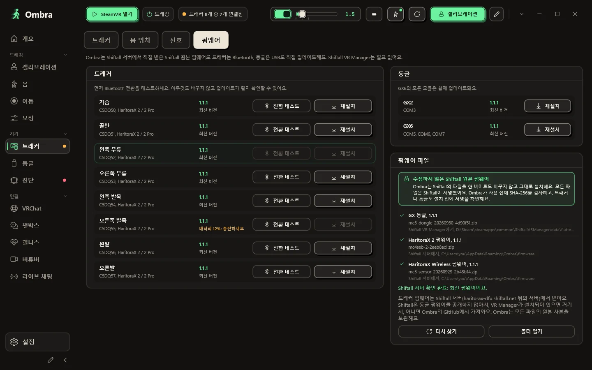
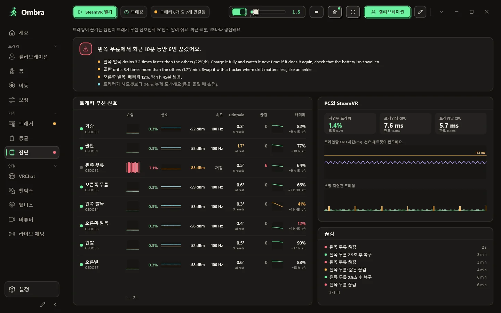
내 몸을 실시간으로
센서와 헤드셋으로 Ombra가 만들어 낸 몸을 정면, 측면, 자유 3D 시점으로 볼 수 있어요. 트래커마다 트래킹 중인지, 시뮬레이션 중인지, 신호가 끊겼는지 표시돼요.
- 모든 센서의 배터리, 업데이트 속도, 신호를 한눈에
- 팔 트래커 없이 컨트롤러만으로 팔꿈치까지
- 캘리브레이션, 빠른 캘리브레이션, 정면 리셋을 클릭 한 번으로
세 가지 자세로 캘리브레이션
똑바로 서고, 스키 자세로 무릎을 굽히고, 발 트래커가 있으면 까치발로 서세요. 뭔가 어긋나면 어느 신체 부위를 확인해야 하는지 Ombra가 알려 줘요.
- VR 안에서 시작: 양쪽 트리거, T포즈, 트래커 두드리기 또는 단축키
- 빠른 캘리브레이션은 트래커마다 착용 방향을 기억해요. 재시작한 뒤에도요
- 걷기 캘리브레이션: 몇 걸음만 걸으면 골반, 다리, 발이 정렬돼요
- 컨트롤러로 몸과 바닥을 터치해서 측정
직접 조절하는 스무딩
부드럽게, 균형, 빠른 반응, 끔 중에서 고르거나 슬라이더로 원하는 만큼 맞추세요. 트래커마다 따로 스타일을 줄 수도 있어요(예: 발만 더 차분하게).
- 웅크리기와 점프는 지연 없이 또렷하게
- 모든 자세에 속도 정보가 실려 있어서 SteamVR이 프레임 단위로 예측해요
- 원하면 SteamVR 속 다른 IMU 트래커도 스무딩
드리프트는 플레이하는 동안 알아서
드리프트 보정은 플레이하는 동안 작동하고, 신체 부위마다 무엇을 하고 있는지 실시간 표로 보여 줘요.
- 오래 플레이해도 리셋은 더 적게
- 기능마다 따로 켜고 끄기
- 플레이할수록 더 정확해져요
다리, 발, 바닥
몸이 자연스럽게 움직여요. 발은 바닥 위에 있고, 디딘 발은 미끄러지지 않고, 무릎은 절대 반대로 꺾이지 않아요.
- HaritoraX 2 거리 센서로 발목 굽힘까지 표현
- 앉거나 누워도: 아래의 침대, 소파, 바닥을 Ombra가 알아서 찾습니다
- 짧은 신호 끊김은 부드럽게 추정한 자세로 보완
- 게임마다 SteamVR에 보여 줄 트래커 선택
트래커 하나하나 자세히
시리얼, 펌웨어, 동글 슬롯, 배터리 전압, 양쪽 신호, 지자기 센서 상태, 실제 업데이트 속도까지 볼 수 있어요.
- 신체 부위, 업데이트 속도(100 또는 50Hz), 센서 모드 변경
- 촬영할 때는 상태 표시등 끄기
- SlimeVR 호환 트래커를 Wi-Fi나 USB 리시버로 연결, Wi-Fi 설정은 케이블로
동글과 무선 채널
GX2는 슬롯이 2개, GX6는 무선 모듈 3개에 각각 슬롯이 2개 있어요. Ombra는 모든 모듈과 슬롯마다 연결된 트래커, 그리고 채널을 보여 줘요.
- VR Manager 없이 트래커 페어링·페어링 해제
- 채널 변경, 두 모듈이 겹치면 경고
- 새로 꽂은 동글을 클릭 한 번으로 찾기
펌웨어도 같은 창에서
Shiftall 원본 펌웨어 파일을 수정 없이 그대로 써서, 트래커는 Bluetooth로, 동글은 USB로 업데이트해요.
- 아무것도 바꾸지 않고 Bluetooth 전환부터 테스트
- 트래커끼리 펌웨어 버전이 다르면 경고
- 모든 파일은 사용 전에 SHA-256으로 검사
무선 신호 탓일까, PC 탓일까?
트래킹이 끊길 때 진단 페이지가 원인을 보여 줘요. 트래커별 손실 패킷, 신호, 실제 업데이트 속도를 SteamVR이 놓친 프레임과 나란히 비교할 수 있어요.
- 트래커별로 최근 몇 분을 그래프로
- 숫자만이 아니라 알기 쉬운 결론까지
음악과 심박수를 담은 나만의 VRChat 챗박스.
채팅박스에 보일 내용을 실시간 값과 함께 한 줄씩 만드세요. Ombra가 깔끔하게 정리하고 넘치지 않게 합니다.
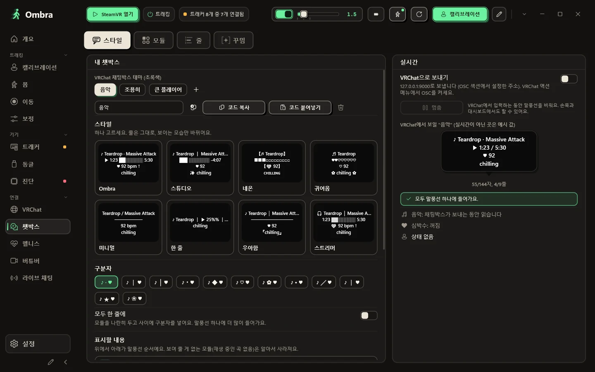
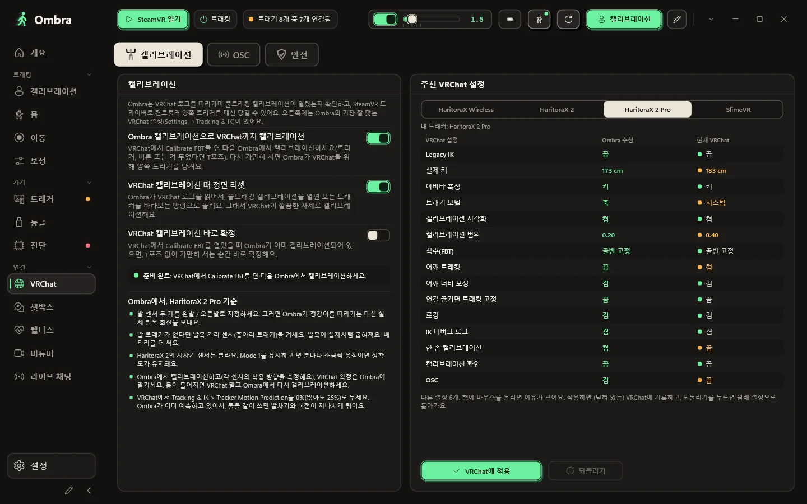
나만의 챗박스
노래, 심박수, 상태, 시각 줄을 원하는 순서로 끌어 놓고, 클릭으로 항목을 추가하고, 각 줄이 VRChat에서 어떻게 보일지 확인하세요. 꾸밈과 글자 스타일은 VRChat이 그릴 수 있는 문자만 씁니다. 레이아웃을 테마로 저장하고 코드로 공유하세요. 말풍선에 다 안 들어가면 자르지 않고 페이지를 넘깁니다.
- Spotify든 다른 플레이어든 로그인 없이 지금 재생 중인 곡 표시, 손목에서 재생·일시정지·건너뛰기
- Pulsoid 또는 Bluetooth 스트랩·워치에서 바로 받는 심박수, 아바타에도 전송
- Ombra만 아는 상태: 자리 비움, 자는 중, 풀트래킹 켬/끔
- 텍스트가 바뀔 때만 전송: 도배도, 챗박스 타임아웃도 없음
VRChat을 위해 만든 앱
Ombra 캘리브레이션 한 번으로 VRChat 캘리브레이션까지 끝나요. VRChat이 내 트래커에 권장하는 풀트래킹 설정도 클릭 한 번이면 적용되고, 되돌릴 수도 있어요.
- SteamVR 없이 Quest 단독 VRChat에서 쓰는 OSC 트래커
- VSeeFace, Warudo, VNyan 등 버튜버 앱용 VMC
튕겼나요? 누가 그랬는지 Ombra가 알려 줘요.
VRChat은 누가 들어오고 어떤 아바타를 불러오는지 로그에 남겨요. Ombra가 PC에서 이 로그를 읽어서, 크래시가 나면 유력한 크래셔를 보여 주고 클릭 한 번으로 그 아바타를 숨길 수 있어요.
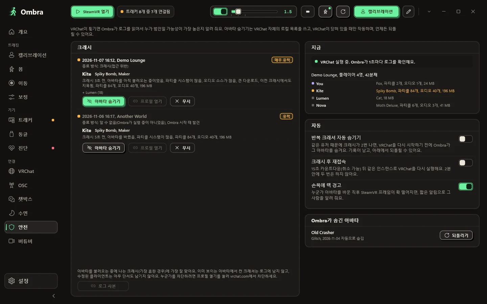
- 인스턴스에 누가 있는지, 어떤 아바타를 쓰는지, 얼마나 무거운지
- 크래시 후: 유력한 크래셔, 그 아바타, 몇 초 전이었는지
- 클릭 한 번으로 그 아바타 숨기기, 언제든 되돌리기
- 아바타 때문에 프레임이 떨어지면 손목에 경고
- 선택 사항: 같은 사람 때문에 두 번 튕기면 자동으로 숨기기, 취소할 수 있는 카운트다운 후 재접속
- VRChat 비밀번호는 절대 묻지 않고, 게임도 절대 건드리지 않아요
헤드셋을 벗을 필요가 없어요.
플레이 중에 필요한 건 손목과 SteamVR 대시보드에 다 있어요.
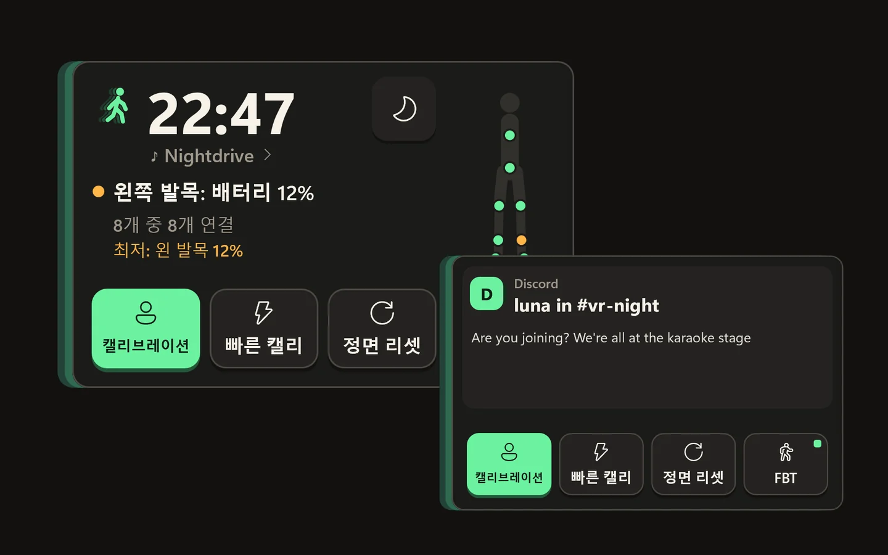
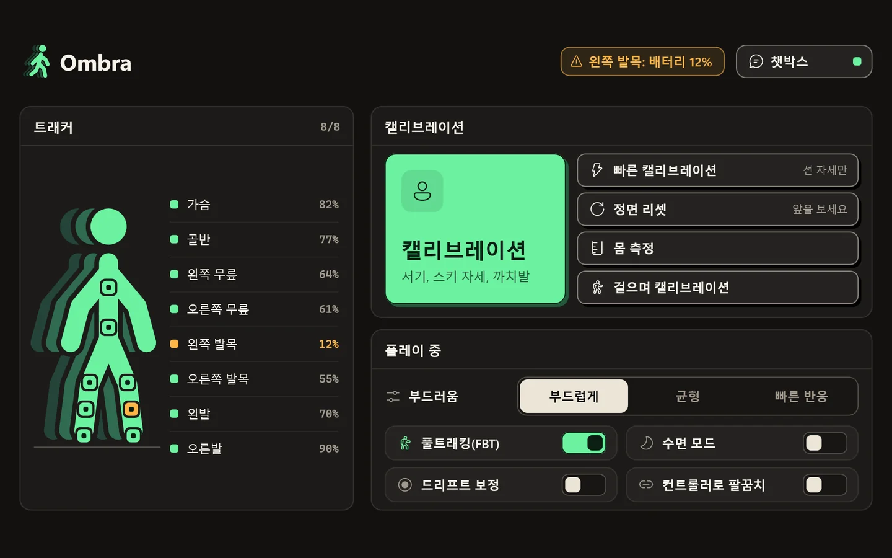
손목 위의 시계
손목을 보면 스르르 나타나요. 시간, 트래커, 재생 중인 곡, 심박수, PC 알림까지. 시선을 돌리면 사라져요.
- 다른 손으로 터치해서 캘리브레이션, 빠른 캘리브레이션, 정면 리셋
- 터치 한 번으로 풀트래킹 켜고 끄기, 다시 켜도 캘리브레이션 필요 없음
- 수면 모드: 자는 동안 차분한 몸과 조용한 음성
SteamVR 대시보드 속 탭
모든 트래커와 배터리, 캘리브레이션과 정면 리셋용 큼직한 버튼, 플레이 중에 바꾸는 스위치까지 있어요.
- 트래커 연결이 끊기거나 배터리가 부족하면 VR 안에서 경고
- 스페이스 드래그: 버튼을 누른 채 월드를 당기기, 던지기와 중력까지
그리고 소소한 것들.
가벼운 네이티브 앱
브라우저 없이 가볍고, 색 테마는 12가지. SteamVR이 Ombra를 실행하면 트레이에서 트래커 패널과 함께 대기합니다.
나만의 퀵 바
가장 자주 쓰는 버튼을 원하는 순서대로.
클릭 한 번으로 업데이트
새 버전이 나오면 Ombra가 알려 주고, SteamVR이 실행 중일 때는 절대 업데이트하지 않아요.
하던 그대로 이어서
선택 사항: 재시작 후 가만히 서 있으면 Ombra가 알아서 캘리브레이션해요.
뭐든 돈을 내야 하는 세상에서 Ombra는 무료예요. 게다가 내 데이터도 가져가지 않아요.
Ombra가 인터넷으로 하는 일과 하지 않는 일을 전부 적었어요.
내 PC에만 남는 것
- 설정, 캘리브레이션, 신체 치수
- 크래시 리포트, 그리고 Ombra가 VRChat 로그에서 읽은 내용
- 심박수와 재생 중인 음악
인터넷 연결은 이때만
- 새 버전 확인(GitHub), 켜 둔 경우에만
- 트래커 펌웨어 다운로드(Shiftall), 업데이트할 때만
- Pulsoid처럼 직접 연결한 서비스
아예 없는 것
- 가입할 계정
- Ombra 서버
- 광고, 분석, 텔레메트리
- 요금, 지금도 앞으로도
설치는 네 단계면 끝.
Windows 10 또는 11(64비트)과 SteamVR, 그리고 GX 동글을 쓰는 HaritoraX 2, 2 Pro, Wireless나 SlimeVR 호환 트래커가 필요해요.
설치 파일 다운로드
파일은
Ombra-Setup.exe하나예요. 아래 버튼은 항상 최신 버전을 받아요.VR Manager와 SteamVR 종료
동글은 한 번에 앱 하나만 쓸 수 있어요.
설치 프로그램 실행
관리자 권한 없이 설치되고 SteamVR 드라이버를 등록해요. Windows가 경고하나요? 아래 질문을 확인하세요.
캘리브레이션
트래커를 켜고 SteamVR을 실행한 다음, 트래커를 착용하고 캘리브레이션을 누르세요.
최신 버전. 모든 릴리스와 변경 사항
자주 묻는 질문
더 궁금한 게 있나요? GitHub에서 물어보세요.
Shiftall VR Manager가 아직 필요한가요?
아니요. Ombra가 직접 동글을 읽고, 트래커를 페어링하고, Shiftall 원본 파일로 펌웨어를 업데이트해요. Ombra를 쓰는 동안에는 VR Manager를 꺼 두세요.
어떤 트래커와 동글을 지원하나요?
GX2 또는 GX6 동글을 통한 HaritoraX 2, 2 Pro, Wireless, 그리고 Wi-Fi나 USB 수신기를 쓰는 SlimeVR 호환 트래커(예: Butterfly, Smol Slime). Vive 트래커 같은 베이스 스테이션 트래커는 Quest에 맞춰 정렬할 수 있고, SteamVR에 있는 다른 IMU 트래커도 부드럽게 할 수 있습니다. HaritoraX 1(유선)은 지원하지 않습니다.
Quest에서도 되나요?
네. PC와 함께 SteamVR로 쓸 때는 Link, Air Link, Virtual Desktop, Steam Link 모두 돼요. Quest 단독으로 VRChat을 실행할 때는 SteamVR 없이 PC에서 OSC로 몸 움직임을 보내요.
Windows가 설치 파일에 경고를 띄우는 이유는 뭔가요?
설치 파일에 아직 코드 서명이 없어서 SmartScreen이 알아보지 못해요. 추가 정보를 누른 다음 실행을 누르세요. 사용자 폴더에 설치되므로 관리자 권한이 필요 없어요.
SteamVR에서 Ombra는 어떻게 보이나요?
설치 프로그램이 Ombra 전용 SteamVR 드라이버를 설치해요. 트래커는 역할(골반, 가슴, 무릎, 발, 팔꿈치)이 이미 지정된 상태로 SteamVR에 나타나고, Ombra는 SteamVR이 알아서 실행해 줘요.
헤드셋, 컨트롤러, 베이스 스테이션도 건드리나요?
아니요. Lighthouse 기기, 헤드셋, 컨트롤러는 절대 수정하지 않아요. 드라이버는 Ombra의 가상 트래커만 만들고, 직접 켰을 때만 다른 IMU 트래커를 스무딩해요.
트래커 없이 써 볼 수 있나요?
네. Ombra.exe --demo를 실행하면 GX2와 GX6에 연결된 데모 트래커 8개가 나와요. 데모는 COM 포트, Bluetooth, SteamVR, 설정을 절대 건드리지 않아요.
Ombra는 어떤 언어를 지원하나요?
앱과 이 사이트는 영어, 이탈리아어, 독일어, 프랑스어, 스페인어, 브라질 포르투갈어, 일본어, 한국어, 중국어 간체, 러시아어로 제공돼요. Ombra는 Windows 언어를 따라가고, 설정에서 바꿀 수 있어요.
Shiftall이나 Valve와 관련이 있나요?
아니요. Ombra는 독립 프로젝트이고, 무료로 다운로드해서 쓸 수 있어요. 소스 코드는 공개하지 않지만, GitHub에서 기능, 확장, 번역을 제안할 수 있어요.